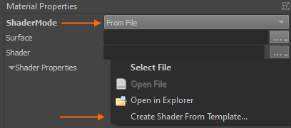
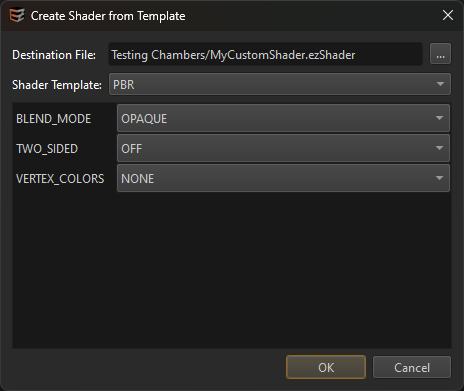

Shader Templates
Writing a custom shader from scratch is a rather difficult task, especially if you want a custom material shader, that has all the PBR lighting features. However, using shader templates this becomes quite straight forward.
A shader template is simply a functioning shader file that you can edit. Shaders are generally written in HLSL, though EZ shader files have additional sections for configuring various other aspects. There are different templates available for common use cases.
Creating a New Shader from a Template
Open a material asset that should use a custom shader. As it's ShaderMode select From File. Now click the browse (...) button next to the Shader property, to open the context menu:

From this menu select Create Shader From Template.... The following dialog is shown:

Select the output file name and which template to create the shader from. When you select a template, the area below shows additional options. These simply select what code from the template should be included in your new file and is purely for convenience to get started more easily. You can add and remove any feature manually afterwards as needed.
Once you click OK the shader file is created, applied to the material and opened in a text editor for you to start editing. When you make structural changes (exposed parameters, permutation variables used and such) you need to transform the material for the changes to properly show up.
As long as you only modify the HLSL code, you can also just press F4 to reload resources at any time. If there are any errors, they are shown in the log.
Adding a Shader Template
If you want to add another shader template itself, have a look at the folder Data/Tools/ezEditor/ShaderTemplates. All you need to do is add another .ezShaderTemplate file here. Shader templates have an additional TEMPLATE_VARS section at the beginning that define what options to display in the dialog.
The final shader code is built by running a C preprocessor over the file, but instead of replacing #if / #endif sections, it only looks at %if / %endif (using a percentage sign rather than a hash), to generate the output.